KiMONo
Knowledge Guided Multi-Omic Network Inference
16 May 2022
This is a tutorial for multi-modal graph inference and analysis using the KiMONo framework on fictional data.
Ogris et. al, 2021

Graph inference from multimodal biological data sets of different measurement techniques has always been a big challenge in life sicience. KiMONo infers a multimodal graph by creating a sparse group lasso regression model for each feature. The method uses prior knowledge to pre-weight features. All trained models are then combined in a graph. Here nodes represent an individual input feature, like blood parameters, genes or proteins, and edges are modeled relations between them..
Example
Libraries
library(kimono) # framework
#Dependencies
library(igraph) # network structures and statistics
library(data.table) # replacing data frames
library(oem) # SGL implementation
library(foreach) # Paralellization
library(doSNOW) # multi-core support
library(dplyr)
library(tidyverse)
#Visualization
library(ggplot2)
library(cowplot)
library(DT)Mulit-modal data
In this example we look at fictional transcriptomic, proteomic and phenotypic data.
- Rows represent samples
- Columns represent features
phenotype <- fread("data/phenotype.csv")
head(phenotype)## sample z
## 1: Sample_1 A
## 2: Sample_2 A
## 3: Sample_3 A
## 4: Sample_4 A
## 5: Sample_5 A
## 6: Sample_6 Atranscriptome <- fread("data/expression.csv")
head(transcriptome)## sample gene_A gene_B gene_C gene_D gene_E
## 1: Sample_1 4.421168 42.67473 8.0643223 17.423778 3.51714
## 2: Sample_2 4.958355 55.95279 3.2513866 13.453309 14.35695
## 3: Sample_3 3.750884 27.60191 0.9243902 8.217539 14.72366
## 4: Sample_4 5.178879 41.32921 3.4939899 12.020479 22.20549
## 5: Sample_5 3.504407 40.05374 5.3195318 11.271656 12.03692
## 6: Sample_6 4.177704 20.10804 13.2669418 5.013483 11.19223proteome <- fread("data/proteome.csv")
head(proteome)## sample m n o p q
## 1: Sample_1 -3.862189 4.005114 5.217761 -1.5971561 0.1723373
## 2: Sample_2 -4.332433 4.791025 2.783295 1.3791251 2.8937777
## 3: Sample_3 -5.422645 3.436808 6.393865 -5.2178824 1.2808751
## 4: Sample_4 -6.102196 4.213826 4.567969 -1.1465640 2.9405095
## 5: Sample_5 -4.483278 4.977083 7.114059 0.7268057 0.1288424
## 6: Sample_6 -7.750421 3.765839 5.080652 1.1494149 3.1470027Preprocessing
Matched samples
KiMONo relies on the fact that we feed it with matched samples. Meaning each row in each data type must represent the same sample.
phenotype <- phenotype[match(transcriptome$sample, phenotype$sample),]
proteome <- proteome[match(transcriptome$sample, proteome$sample),]Dummy coding
phenotype$z %>% head## [1] "A" "A" "A" "A" "A" "A"Character based variables must be either dummy coded or excluded
phenotype$z <- phenotype$z %>% as.factor %>% as.numeric
phenotype$z %>% head## [1] 1 1 1 1 1 1Final
input_data <- list(
'gene' = transcriptome[,-"sample"],
'protein' = proteome[,-"sample"],
'phenotype' = phenotype[,-"sample"]
)
#it is recommended to remove the original data to free some memory
rm(transcriptome,phenotype,proteome)Prior data
KiMONo convert a simple csv based files to a prior network which suits us as an inference blueprint.
gene_gene <- fread("data/mapping_expr.csv")
gene_gene %>% head## A B layer_A layer_B
## 1: gene_A gene_A gene gene
## 2: gene_B gene_A gene gene
## 3: gene_C gene_A gene gene
## 4: gene_D gene_A gene gene
## 5: gene_E gene_A gene gene
## 6: gene_A gene_B gene genegene_proteome <- fread("data/mapping_expr_prot.csv")
gene_proteome %>% head## A B layer_A layer_B
## 1: gene_A m gene protein
## 2: gene_B m gene protein
## 3: gene_C m gene protein
## 4: gene_D m gene protein
## 5: gene_E m gene protein
## 6: gene_A n gene proteinEach row represents a pair of features which is known to be related.
KiMONo uses the igraph package to efficiently incorporate the prior information.
prior_network <- create_prior_network(rbind(gene_proteome,gene_gene) ) ## prior networkPlotting prior network
vertex <- do.call(rbind,strsplit(V(prior_network)$name,split = '___'))
prior_network %>% plot(edge.curved=0,
main = 'Prior Network',
vertex.color = c("steel blue", "orange")[vertex[,1] %>% as.factor %>% as.numeric],
vertex.frame.color="white",
vertex.label = vertex[,2],
vertex.label.color='black',
vertex.label.cex=.7,
layout=layout_randomly, rescale=F)
legend(x=-1.5, y=-1.1, c("Genes","Proteins"), pch=21,
col="#777777", pt.bg=c("steel blue", "orange"), pt.cex=2, cex=.8, bty="n", ncol=1)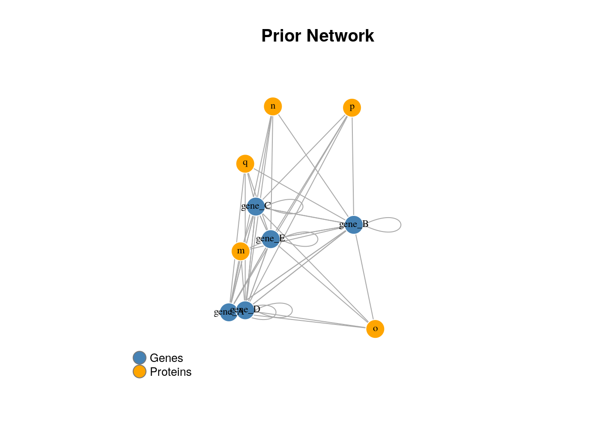
KiMONo
Inference steps:
- Load the prior
- Check if there arre layers without priors if so the algorithm will add each features to every model
- Iterate over each data type
- Train a Sparse Group Lasso model for each node(target or y) in the prior network and determine the:
- effects sizes of connected features (predictors)
- r squared
- mse
- Combine all models
Regression model: \[\begin{aligned} y \sim X\beta + \epsilon \\ \end{aligned}\]
Sparse Group Lasso penalty: \[ \frac{1}{2n} \Bigg|\Bigg| y - \sum_{l=1}^{m} X^{(l)} \beta^{(l)} \Bigg|\Bigg|_{2}^{2} + ( 1 - \alpha ) \lambda \sum_{l=1}^{m} \sqrt{p_{l}}\big|\big|\beta^{(l)}\big|\big|_2 + \alpha\lambda\big|\big|\beta \big|\big|_1 \]
Call KiMONo
network <- kimono(input_data, prior_network ,core = 2, infer_missing_prior = TRUE)## 1) input data:
## layer - samples - features - prior features
## gene - 100 - 5 - 5
## protein - 100 - 5 - 5
## phenotype - 100 - 1 - 0
##
## 2) inference:
## for layers gene protein
## 2022-05-16 13:04:16 starting inference of 10 models
##
|
| | 0%
##
## 3) missing prior
## phenotype
## overall layer
## 2022-05-16 13:04:17 starting inference of 1 models
##
|
| | 0%
##
## Done 0.03 min#plot network
to_igraph(network) %>% plot_kimono(title='KiMONo Network (directed)')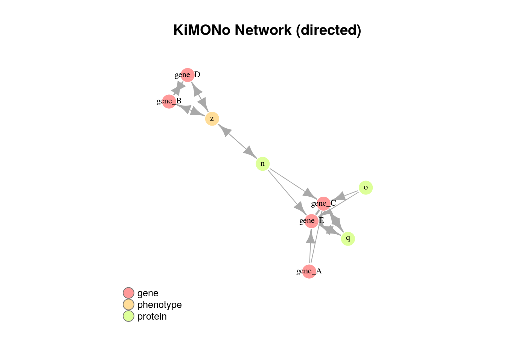
to_igraph(network, directed = F) %>% plot_kimono(title='KiMONo Network (undirected)')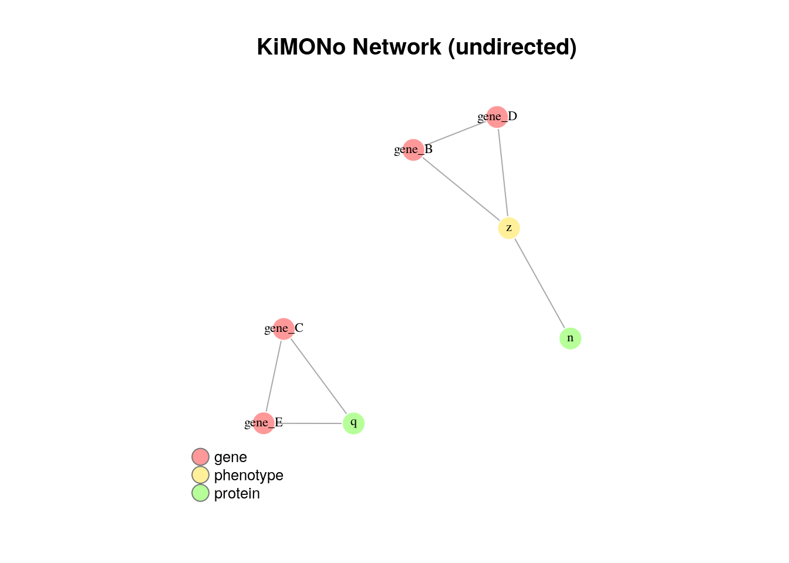
Result
Columns:
- target - vector y in regression model
- predictor - each feature in X used in model y
- value - effect size of predictor on target
- r_squared - model performance
- mse - model error
- predictor_layer - input data the predictor belongs to
- target_layer - input data the target belongs to
DT::datatable(head(network), class = 'cell-border stripe')Network Analysis
Quality
Evaluating the r2 for each model gives us the possibility to compare the performances of our models.
Note the rsquared is the same for each target.
gg_all <- network[predictor == '(Intercept)',] %>%
ggplot( aes(y=r_squared)) +
geom_boxplot()
gg_grouped <- network[predictor == '(Intercept)',] %>%
ggplot( aes(y=r_squared,x=target_layer)) +
geom_boxplot(fill=c("steel blue",'#842F39', "orange"))
plot_grid(gg_all, gg_grouped, rel_widths = c(1, 2))nnodes <- c(network$target, network$predictor) %>% unique %>% length
nedges <- dim(network)[1]
cat('Number of Nodes: ',nnodes)## Number of Nodes: 12cat('Number of Edges: ',nedges)## Number of Edges: 65Filter network
Often we are only interested in models which perform well and have large effect sizes.
network <- network %>%
filter(value > 0.001 | value < -0.001 ) %>% # filter low effects
filter(r_squared > 0.001) %>% # filter low performing models
filter(predictor != '(Intercept)') # filter all intercepts (should be close to 0 due to normalization step)New network properties
nnodes <- c(network$target, network$predictor) %>% unique %>% length
nedges <- dim(network)[1]
cat('Number of Nodes: ',nnodes)## Number of Nodes: 9cat('Number of Edges: ',nedges)## Number of Edges: 20Generate igraph for easier network analysis
#generate undirected igraph
ig_network <- to_igraph(network, directed=TRUE)
ig_network %>% plot_kimono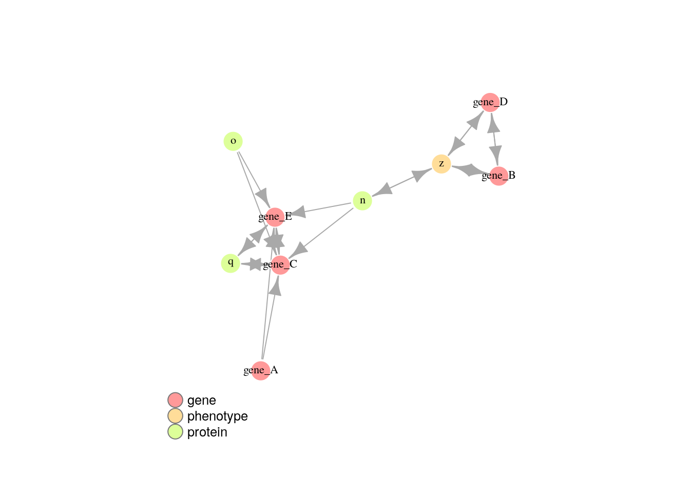
General
cat('Density: ', ecount(ig_network)/(vcount(ig_network)*(vcount(ig_network)-1)), '\n' )## Density: 0.2777778cat('Reciprocity: ', reciprocity(ig_network) , '\n' )## Reciprocity: 0.7cat('Transitivity: ', transitivity(as.undirected(ig_network, mode="collapse")) , '\n' )## Transitivity: 0.483871Node degree and distribution
deg <- degree(ig_network, mode="all")
cat('Average node degree: ', mean(deg), '\n' )## Average node degree: 4.444444hist(deg, breaks=1:vcount(ig_network)-1, main="Histogram of node degree")deg.dist <- degree_distribution(ig_network, cumulative=T, mode="all")
plot( x=0:max(deg), y=1-deg.dist, pch=19, cex=1.2, col="orange",
xlab="Degree", ylab="Cumulative Frequency")Hubs and authorities
Hubs were expected to contain catalogs with a large number of outgoing links….
hs <- hub_score(ig_network, weights=NA)$vector
l <- layout_with_kk(ig_network)
plot(ig_network,
edge.curved=0,
vertex.color = c("steel blue",'#842F39', "orange")[vertex[,1] %>% as.factor %>% as.numeric],
vertex.frame.color="white",
vertex.label = vertex[,2],
vertex.label.color='black',
vertex.label.cex=.7,
layout=l,
vertex.size=hs*20, main="Hubs"
)
legend(x=-1.5, y=-1.1, c("Genes","Phenotype","Proteins"), pch=21,
col="#777777", pt.bg=c("steel blue","#842F39", "orange"), pt.cex=2, cex=.8, bty="n", ncol=1)
…while authorities would get many incoming links from hubs
as <- authority_score(ig_network, weights=NA)$vector
plot(ig_network,
edge.curved=0,
vertex.color = c("steel blue",'#842F39', "orange")[vertex[,1] %>% as.factor %>% as.numeric],
vertex.frame.color="white",
vertex.label = vertex[,2],
vertex.label.color='black',
vertex.label.cex=.7,
layout=l,
vertex.size=as*20, main="Authorities"
)
legend(x=-1.5, y=-1.1, c("Genes","Phenotype","Proteins"), pch=21,
col="#777777", pt.bg=c("steel blue","#842F39", "orange"), pt.cex=2, cex=.8, bty="n", ncol=1)Handling missing data
KiMONo has integreated five additional lasso approaches to handle missingness in two different ways:
- Two-steps approach based on prior imputation and late aggregation
- Direct missing data handle using inverse covariance approaches
The next snipped code takes the input data used previously for KiMONo example and randomly removes the 5% of the data in the gene and protein matrices alike.
set.seed(1234)
missingness <- 0.05
for(layer in c('gene','protein')){
dat <- as.matrix(input_data[[layer]])
n <- round(length(dat) * missingness)
positions_sample <- sample(x = length(dat), size = n)
dat[positions_sample] <- NA
input_data[[layer]] <- setDT(as.data.frame(dat))
}kNN imputation
One of the imputation methods is based on k nearest neighbours averaging.
knn_imputed_data <- knn_imputation(input_data,seed = 1234)knnKiMONo
KiMONo has been boosted to apply sparse group lasso over kNN imputed data (knnKiMONo)
knn_network <- kimono(knn_imputed_data, prior_network,core = 2, infer_missing_prior = TRUE)to_igraph(knn_network) %>% plot_kimono(title='knnKiMONo Network (directed)')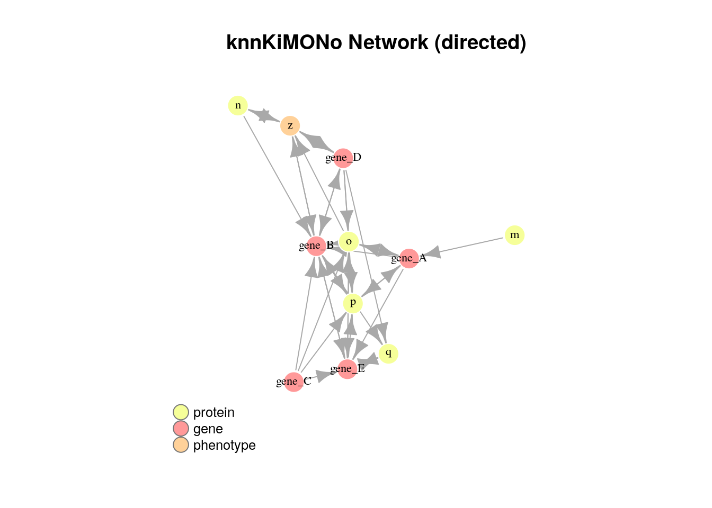
to_igraph(knn_network, directed = F) %>% plot_kimono(title='knnKiMONo Network (undirected)')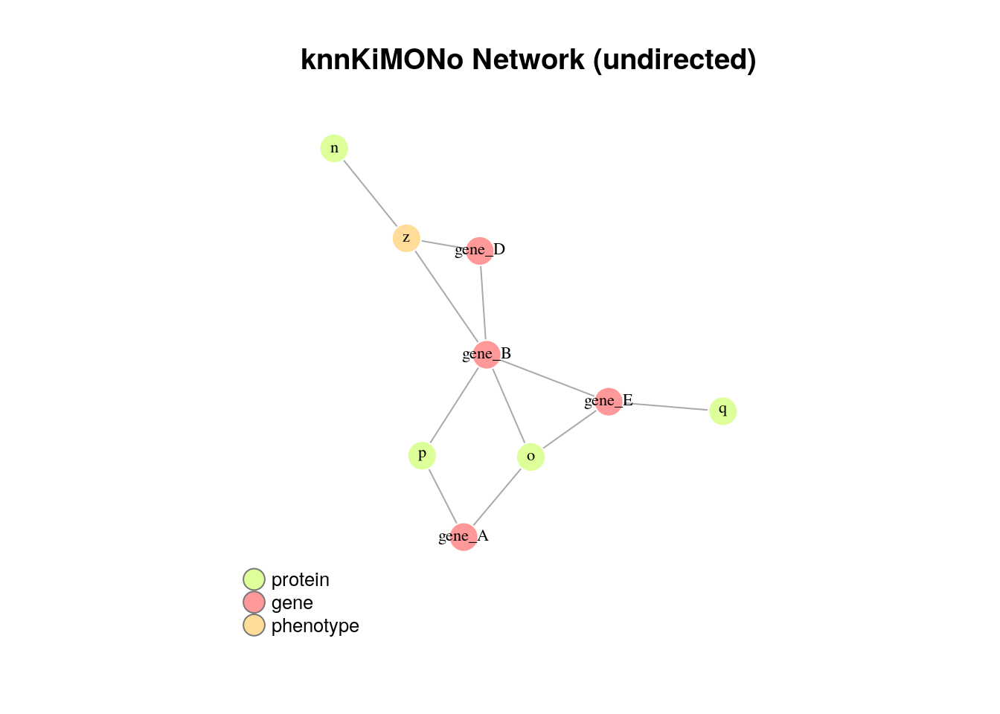
DT::datatable(head(knn_network), class = 'cell-border stripe')Multiple imputation
Another two-step approach is based on multiple imputation. KiMONo is powered by mice R package and the prior network combined with Pearson correlation (ngMice) to improve the time perfomance. You can find more details about this method in Henao et. al, 2022
ng_imputed_data <- ngMice(input_data = input_data,prior_network = prior_network,m = 5)GALasso
Group Adaptive Lasso (GALasso), applies an adaptive weight for small regression coefficients and applies a group penalty as uniform variable selection across imputed datasates ( Du et. al, 2020 ).
galasso_network <- kimono(input_data, prior_network, ng_imputed_data, method = 'galasso', ADW_calculation = TRUE, core = 2, infer_missing_prior = TRUE)to_igraph(galasso_network) %>% plot_kimono(title='GALasso Network (directed)')
to_igraph(galasso_network, directed = F) %>% plot_kimono(title='GALasso Network (undirected)')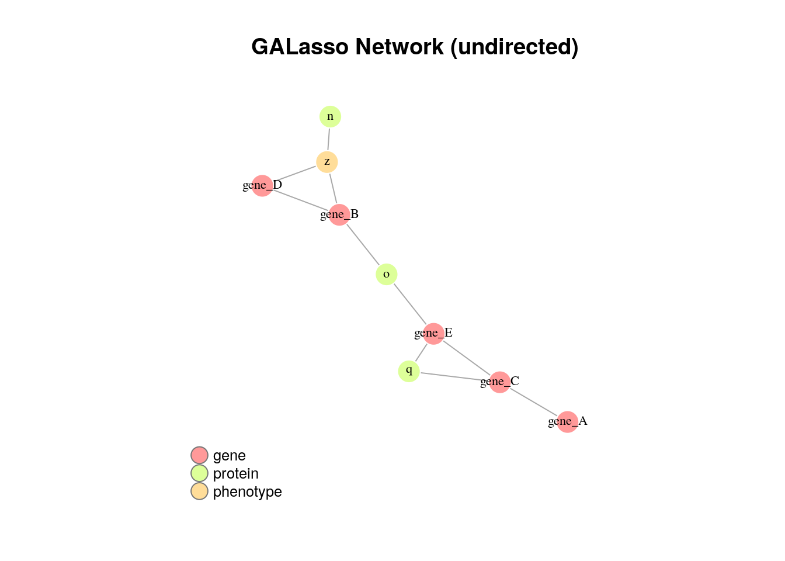
DT::datatable(head(galasso_network), class = 'cell-border stripe')SALasso
Stack Adaptive Lasso (SALasso), it is the summation of the objective functions across imputed datasets and optimize them jointly. As equal as GALasso, adaptive weights can be calculated to penalize the smaller regression coefficients ( Du et. al, 2020 ).
salasso_network <- kimono(input_data, prior_network, ng_imputed_data, method = 'salasso', ADW_calculation = TRUE, core = 2, infer_missing_prior = TRUE)to_igraph(salasso_network) %>% plot_kimono(title='SALasso Network (directed)')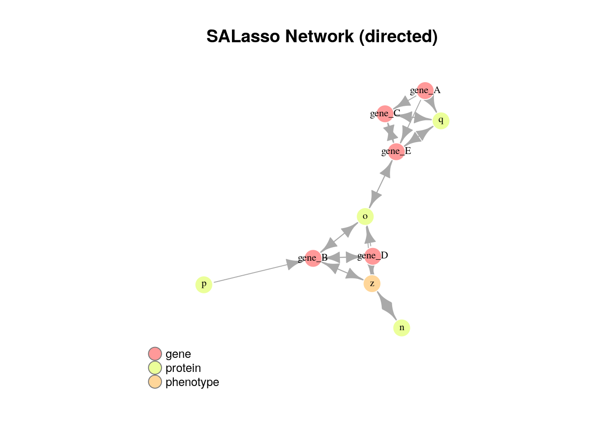
to_igraph(salasso_network, directed = F) %>% plot_kimono(title='SALasso Network (undirected)')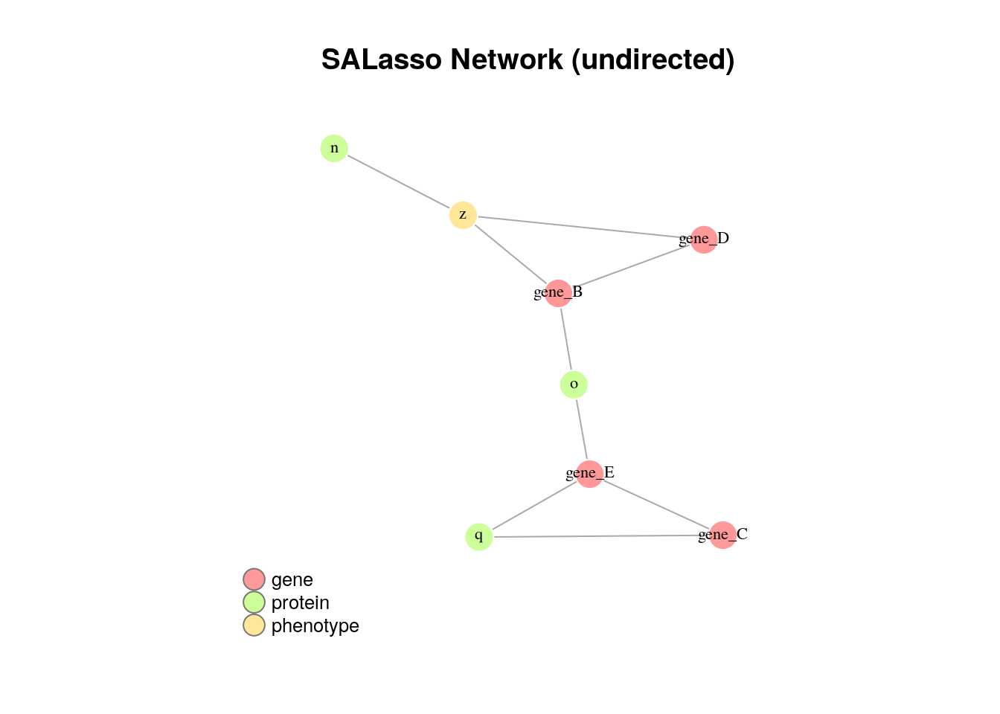
DT::datatable(head(salasso_network), class = 'cell-border stripe')Inverse covariance estimation
CoCoLasso
Convex Contained Lasso (CoCoLasso) allows the calculation of coefficients through the sample covariant matrix of X and the sample vector of X and y calculation. Furthermore, to avoid problems related to negative eigenvector and no-convexing optimization solutions, this method used an alternating direction methods of multipliers algorithm ( Takada et. al, 2019 ).
coco_network <- kimono(input_data, prior_network, method = 'lasso_coco', core = 2, infer_missing_prior = TRUE)to_igraph(coco_network) %>% plot_kimono(title='CoCoLasso Network (directed)')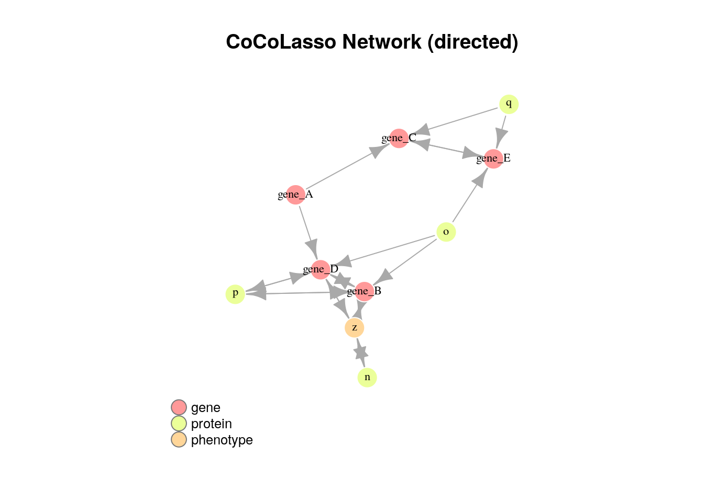
to_igraph(coco_network, directed = F) %>% plot_kimono(title='CoCoLasso Network (undirected)')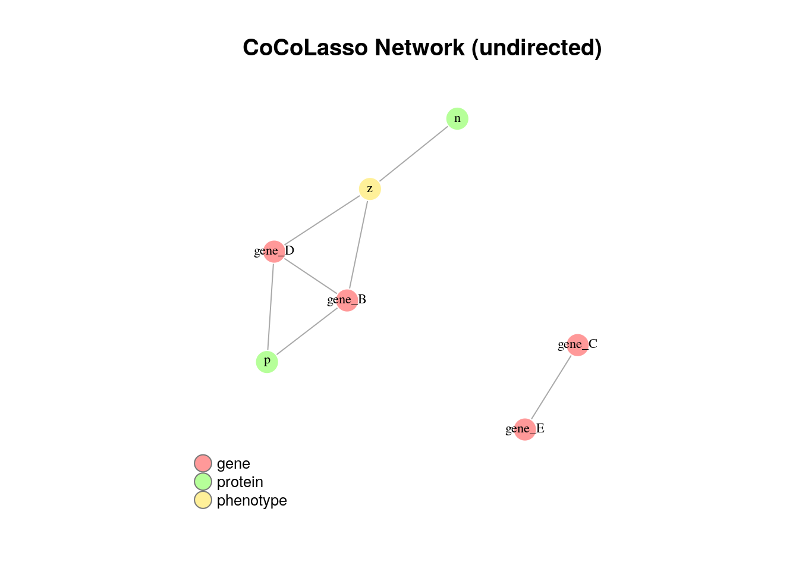
DT::datatable(head(coco_network), class = 'cell-border stripe')HMLasso
Lasso with High Missing rate (HMLasso) is a method proposed as a weighted version of CoCoLasso to avoid the problem of no positive semifinite (PSD) matrix aggregating a covariant matrix calculated from mean imputation matrix. The combination of both allows a low-biased but PSD covariant matrix. To improve the Lasso model optimization, a weighted Frobenius norm is added with alpha higher or equal to zero ( Takada et. al, 2019 ).
hm_network <- kimono(input_data, prior_network, method = 'lasso_hm', core = 2, infer_missing_prior = TRUE)to_igraph(hm_network) %>% plot_kimono(title='HMLasso Network (directed)')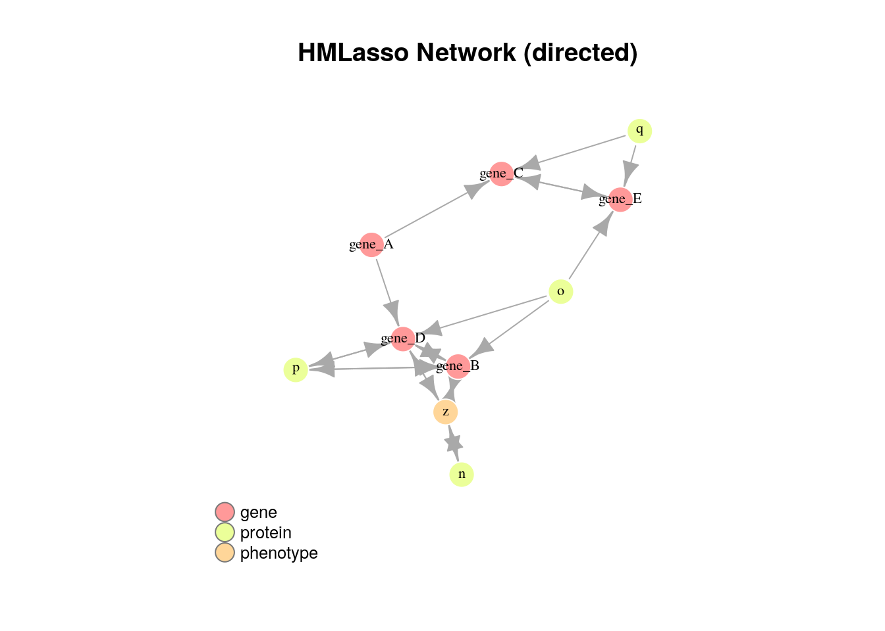
to_igraph(hm_network, directed = F) %>% plot_kimono(title='HMLasso Network (undirected)')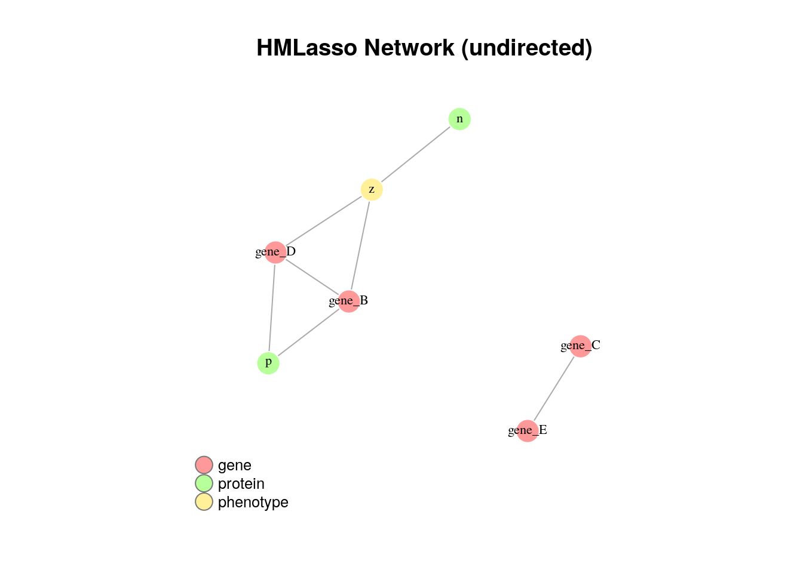
DT::datatable(head(hm_network), class = 'cell-border stripe')BDCoCoLasso
Block-Descent CoCoLasso (BDCoCoLasso) is another alternative for CoCoLasso adding block-coordinate descent to deal with the partial corrupted covariant matrices across the convex optimization ( Escribe et. al, 2021 ).
bdcoco_network <- kimono(input_data, prior_network, method = 'lasso_BDcoco', core = 2, infer_missing_prior = TRUE)to_igraph(bdcoco_network) %>% plot_kimono(title='BDCoCoLasso Network (directed)')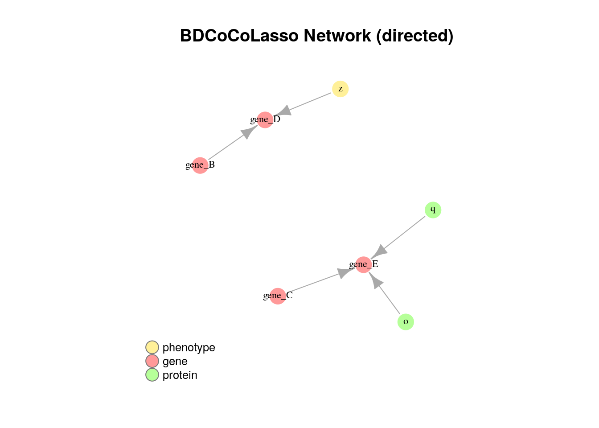
DT::datatable(head(bdcoco_network), class = 'cell-border stripe')Troubleshooting
Installation
You can either install KiMONo locally by cloning the repository or using the devtools package.
Github Installation
- Install the devtools package and load it in R
install.packages("devtools")
library(devtools)- Install KiMONo in R and load the package
install_github("cellmapslab/kimono")
library(kimono)Local Installation
In your terminal change the working directory to the location you want to install KiMONo
Clone the repository:
git clone https://github.com/cellmapslab/kimono.git- Install KiMONo in R and load the package
install.packages("yourpath/kimono/", repos = NULL, type = "source")
library(kimono)Dependencies CentOS
oem
CentOS needs a different version of RcppArmadillo(https://www.gitmemory.com/RcppCore)
install.packages("RcppArmadillo", repos="https://rcppcore.github.io/drat")Session
sessionInfo()